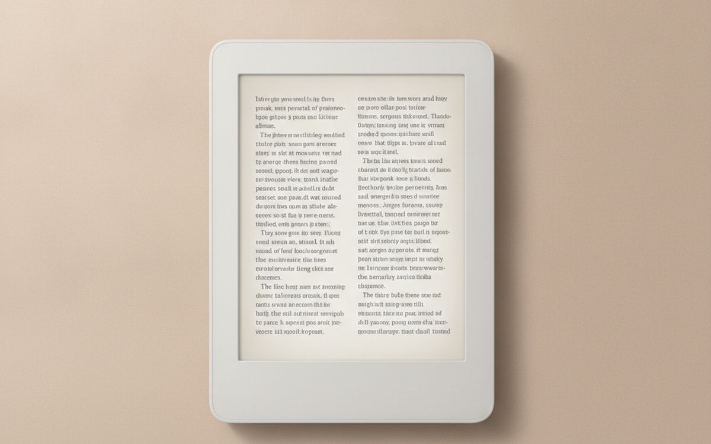
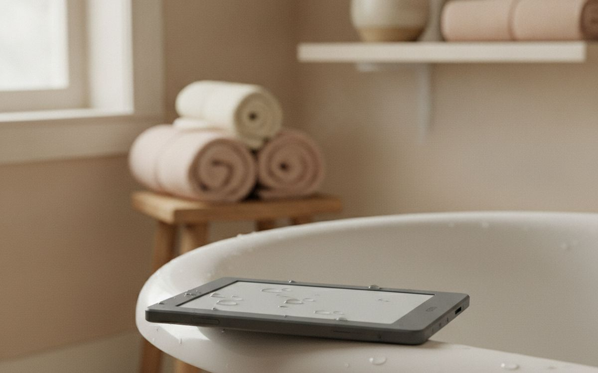
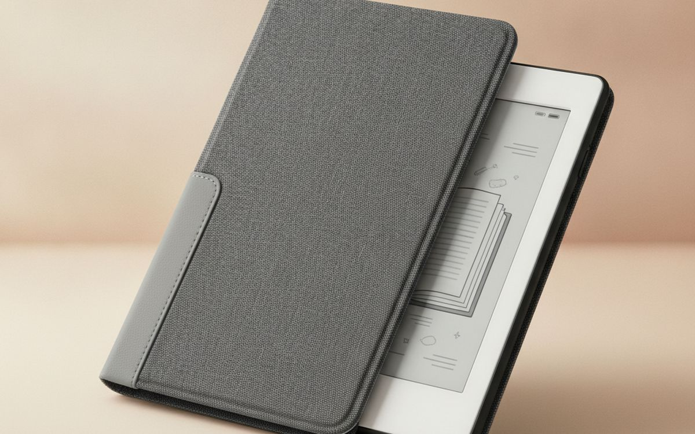
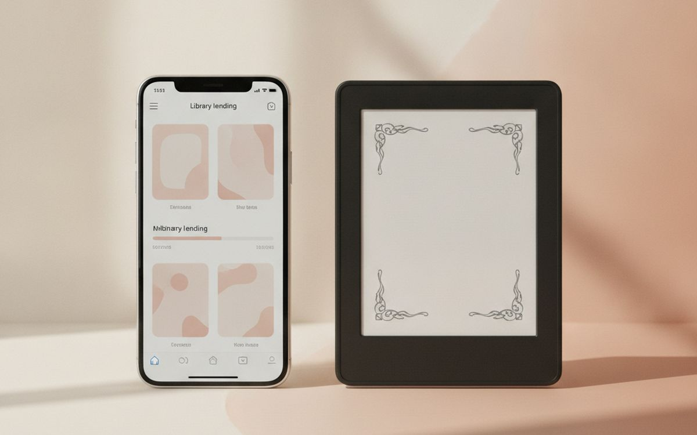
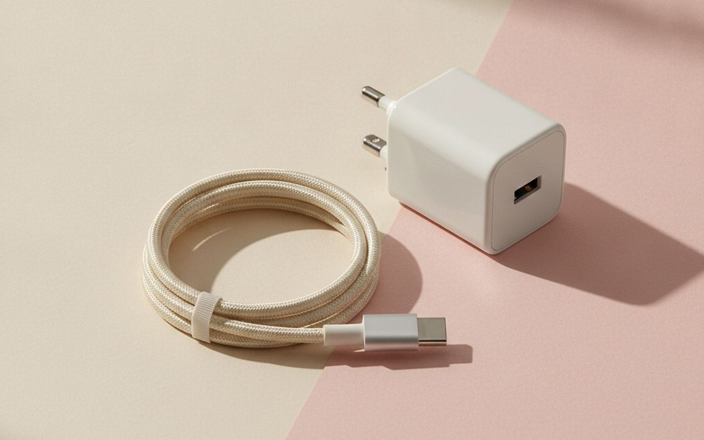
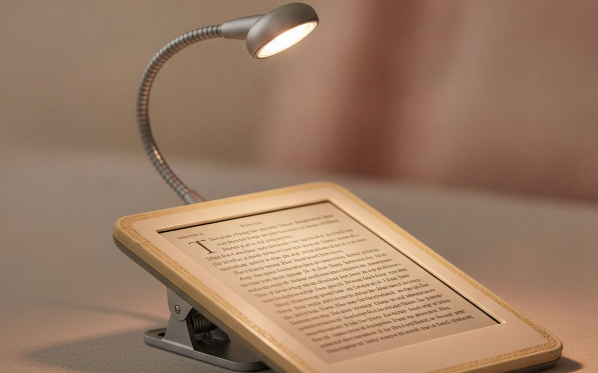
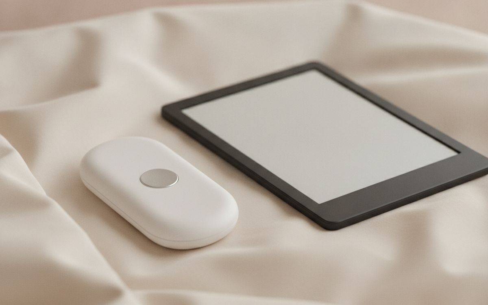
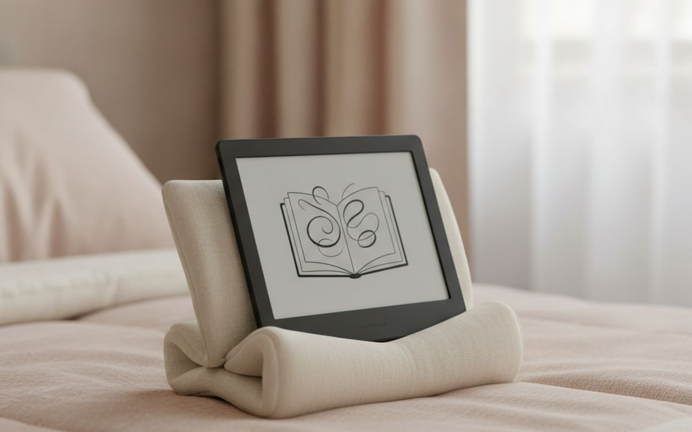
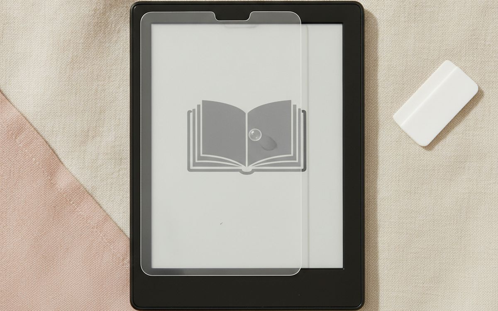
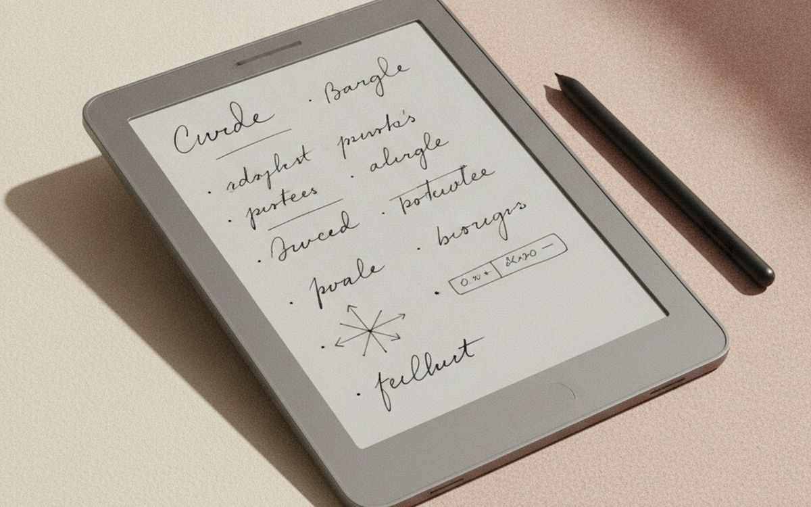

Most people who buy an e-reader stop using it for one of three reasons: the screen hurts in bed, the battery dies at the wrong moment, or they could not get their library books onto it. None of those are problems with reading. They are problems with the setup, and all three are cheap to fix.
This list is ordered by what keeps the device in your hand. The reader itself comes first because the screen is the whole product, but several of the picks below it cost less than a paperback and matter nearly as much. If you already own a working e-reader, start at number three.
Prices below are approximate street prices at the time of writing and move around constantly, especially during sale events. Treat them as a rough band for budgeting, not a quote. Always check the live listing before you buy.
En bref
A 6-7 inch e-reader with a warm front light
The one to buy first
Transparence. Les liens de cette page sont des liens affiliés. Si vous achetez via l’un d’eux, nous pouvons percevoir une commission sans surcoût pour vous. Cela n’influence ni le contenu de cette liste ni son ordre.
Comment nous avons choisi
These picks come from published reviews, long-run owner reports and e-reading forums, cross-checked against current retail listings. We have not personally tested every item here. We weighted screen comfort and battery life far above extra features, because those are what people cite when they explain why the device ended up in a drawer.
En un coup d’œil
Les prix sont indicatifs au moment de la rédaction et changent souvent.
Notre sélection

01 · The one to buy firstA 6-7 inch e-reader with a warm front light
The screen is the product, so spend on it. Look for a 300 ppi e-ink display, a front light that shifts from cool white to amber, and a flush glass front with no raised bezel. The warm light is the feature people underrate most: reading at night under a blue-white glow is what makes many owners give up and go back to the phone. Kindle Paperwhite and Kobo Clara BW are the usual picks in this size, and either will do. The real choice is the store. Kindle locks you to Amazon's shop, while Kobo reads standard EPUB files and has library borrowing built in. The case for it: 300 ppi screen is as sharp as print, warm light makes night reading comfortable, and weeks of battery between charges. The trade-off is real: you are buying into one bookstore's ecosystem and ad-supported versions show lock-screen ads unless you pay to remove them, so weigh that against how often it would actually get used.
$110-170Le compromis: You are buying into one bookstore's ecosystem
Pourquoi il est là
- 300 ppi screen is as sharp as print
- Warm light makes night reading comfortable
- Weeks of battery between charges
Bon à savoir
- You are buying into one bookstore's ecosystem
- Ad-supported versions show lock-screen ads unless you pay to remove them

02 · Readers near waterA waterproof model, if you read in the bath or at the pool
Most mid-range readers now carry an IPX8 rating, which means they survive a drop in fresh water and a splash at the pool. If you read in the bath, on the beach or on a boat, make this rating a filter rather than a nice-to-have. A wet paperback is ruined; a wet e-reader is just wet. Salt water and sand are still bad news for the charging port, so rinse and dry it afterwards. Check the listing carefully, because some sellers mix waterproof and non-waterproof versions of the same model in one listing and the price gap is small. The case for it: iPX8 survives an accidental dunk, lets you read where paper books suffer, and usually costs only a little more. The trade-off is real: touch screens misfire when the glass is wet and rinse off salt water and sand promptly, so weigh that against how often it would actually get used.
$140-200Le compromis: Touch screens misfire when the glass is wet
Pourquoi il est là
- IPX8 survives an accidental dunk
- Lets you read where paper books suffer
- Usually costs only a little more
Bon à savoir
- Touch screens misfire when the glass is wet
- Rinse off salt water and sand promptly

03 · Protecting the screenA slim folio case with auto sleep/wake
E-ink screens crack from pressure, not just drops, and the most common way they die is in a bag with keys or a charger pressing on the glass. A folio case prevents that, and the magnetic sleep/wake closure saves battery without you thinking about it. Match the case to the exact model and generation, because a case for last year's version often misses the power button by a few millimetres. Skip heavy rugged cases unless you have children using the device; weight is the enemy of a one-handed read. The case for it: prevents the pressure cracks that kill most screens, magnetic closure saves battery automatically, and adds very little weight. The trade-off is real: must match your exact model and generation and cheap cases can lose their magnets within a year, so weigh that against how often it would actually get used.
$12-30Le compromis: Must match your exact model and generation
Pourquoi il est là
- Prevents the pressure cracks that kill most screens
- Magnetic closure saves battery automatically
- Adds very little weight
Bon à savoir
- Must match your exact model and generation
- Cheap cases can lose their magnets within a year

04 · Free booksA library lending app account (Libby or your library's own)
This costs nothing and it is the single biggest money saver on the page. Most US public libraries lend e-books through Libby, and in many places you can also send those loans straight to a Kindle. Kobo readers have OverDrive built into the store menu. Waitlists for new bestsellers can be long, but the backlist is enormous and holds are free. If you read more than one book a month, this pays for the e-reader inside a year. Check your own library's website first; what they offer varies by city. The case for it: thousands of free books with a library card, loans return themselves, so there are no fines, and works on most major e-readers. The trade-off is real: popular new releases have waitlists and availability depends on your local library, so weigh that against how often it would actually get used.
Free ($0)Le compromis: Popular new releases have waitlists
Pourquoi il est là
- Thousands of free books with a library card
- Loans return themselves, so there are no fines
- Works on most major e-readers
Bon à savoir
- Popular new releases have waitlists
- Availability depends on your local library

05 · Never running flat on a tripA short USB-C cable and small wall charger
An e-reader runs for weeks, which is exactly why people forget to charge it until the airport gate. Newer models charge over USB-C, so the cable you carry for your phone probably works, but a spare short cable living in the case pocket or your travel pouch means it is always there. A small 20W charger is more than enough. If your reader is older and still uses micro-USB, buy one spare cable now while they are still easy to find. The case for it: removes the most common trip failure, shares a charger with your phone, and costs less than one airport paperback. The trade-off is real: older readers still need micro-USB and cheap unbranded cables fail fast; buy a known brand, so weigh that against how often it would actually get used.
$10-20Le compromis: Older readers still need micro-USB
Pourquoi il est là
- Removes the most common trip failure
- Shares a charger with your phone
- Costs less than one airport paperback
Bon à savoir
- Older readers still need micro-USB
- Cheap unbranded cables fail fast; buy a known brand

06 · Upgrading an old deviceA clip-on or neck reading light, for older non-lit readers
If you have an older basic reader with no front light, you do not need a new device to read in bed. A small clip-on or neck-worn light with a warm setting fixes it for very little. Choose one with at least two brightness levels and a warm colour option, and USB-C charging. Neck lights are better for a partner in the same bed because they throw light down onto the page rather than across the room. This is also a good gift for anyone still reading paper books at night. The case for it: extends the life of a reader you already own, warm settings are easier on a sleeping partner, and works for paper books too. The trade-off is real: glare on glossy screen protectors and clip hinges are the first part to break, so weigh that against how often it would actually get used.
$10-25Le compromis: Glare on glossy screen protectors
Pourquoi il est là
- Extends the life of a reader you already own
- Warm settings are easier on a sleeping partner
- Works for paper books too
Bon à savoir
- Glare on glossy screen protectors
- Clip hinges are the first part to break

07 · Reading with cold hands or in bedA page-turn remote
This looks like a gimmick until you try it. A small Bluetooth or clip-on remote lets you turn pages with your hand under the duvet, while eating, or with the reader on a stand. Some attach to the screen and physically tap it, so they work on any touch reader; others use Bluetooth and only work with models that support it. Check which kind you are buying. For people with arthritis or limited grip, this can be the difference between reading and not. The case for it: hands-free page turns, helpful for limited grip or arthritis, and pairs well with a stand. The trade-off is real: tapper types can misalign and miss the screen and bluetooth versions only suit supported models, so weigh that against how often it would actually get used.
$15-30Le compromis: Tapper types can misalign and miss the screen
Pourquoi il est là
- Hands-free page turns
- Helpful for limited grip or arthritis
- Pairs well with a stand
Bon à savoir
- Tapper types can misalign and miss the screen
- Bluetooth versions only suit supported models

08 · Reading hands-freeA stand or pillow wedge
Holding even a light device for an hour gets tiring, especially lying on your side. A small folding stand for the table, or a soft wedge pillow for bed, lets you read while eating breakfast or with your hands under the covers. The wedge-style ones with a lip are the most comfortable for bed. Combined with a page-turn remote, you barely touch the device at all. This is one of those purchases people make once and keep for a decade. The case for it: removes wrist and hand strain, works for tablets and paperbacks too, and cheap and lasts for years. The trade-off is real: another object on the bed or table and hard stands can scratch unprotected cases, so weigh that against how often it would actually get used.
$15-35Le compromis: Another object on the bed or table
Pourquoi il est là
- Removes wrist and hand strain
- Works for tablets and paperbacks too
- Cheap and lasts for years
Bon à savoir
- Another object on the bed or table
- Hard stands can scratch unprotected cases

09 · Scratch-prone screensA tempered or matte screen protector
Most current readers have a hard glass front and do not strictly need one. Older models and cheaper readers with a soft plastic screen scratch easily, especially if you read at the beach. If you add a protector, choose matte rather than glossy: glossy film undoes the paper-like look that makes e-ink easy on the eyes. Buy a two-pack, because alignment is fiddly and the first attempt often goes wrong. The case for it: protects soft plastic screens from sand and keys, matte film keeps the paper-like finish, and very cheap insurance. The trade-off is real: glossy film adds glare and unnecessary on most newer glass-front models, so weigh that against how often it would actually get used.
$8-15Le compromis: Glossy film adds glare
Pourquoi il est là
- Protects soft plastic screens from sand and keys
- Matte film keeps the paper-like finish
- Very cheap insurance
Bon à savoir
- Glossy film adds glare
- Unnecessary on most newer glass-front models

10 · PDFs and handwritten notesA 10-inch note-taking e-reader
Six-inch readers are made for novels. PDFs, textbooks, sheet music and technical papers are miserable on them because the page shrinks to unreadable. A 10-inch e-ink tablet with a stylus solves that and adds handwritten notes in the margins. Kindle Scribe, Kobo Elipsa and the Boox Note range are the common options; Boox runs Android and installs other reading apps, which is flexible but more fiddly. These are expensive, heavier, and overkill for fiction. Buy one only if your reading is mostly documents. The case for it: shows full PDF pages at readable size, handwritten notes and margin mark-up, and easy on the eyes for long document sessions. The trade-off is real: expensive and heavy for novels and slow page refresh compared with a tablet, so weigh that against how often it would actually get used.
$280-450Le compromis: Expensive and heavy for novels
Pourquoi il est là
- Shows full PDF pages at readable size
- Handwritten notes and margin mark-up
- Easy on the eyes for long document sessions
Bon à savoir
- Expensive and heavy for novels
- Slow page refresh compared with a tablet
Questions fréquentes
Kindle or Kobo?
If you already buy books on Amazon, Kindle. If you borrow from the library a lot or want to buy EPUB books from other stores, Kobo is more open. The hardware is close enough that the store should decide it.
Is an e-reader better for your eyes than a tablet?
For long reading sessions, most people find e-ink more comfortable. It reflects light like paper instead of shining it at you, and a warm front light helps at night.
Do I need a waterproof one?
Only if you read near water. It usually costs a little more, and it is peace of mind if you read in the bath or on holiday.
Can I read library books on it?
In most of the US, yes, through Libby or OverDrive. Check your library's site to confirm it offers e-book lending.
Les offres du jour
Voyez ce qui est en promotion en ce moment.
Offres →← Tous les guides
En tant que affilié AliExpress, nous percevons une commission sur les achats éligibles. Les prix et la disponibilité sont exacts à la date de publication et peuvent changer.